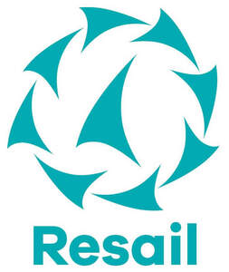

Trade Mark Journal No.2025/034 22 August 2025
UK00004227862 2 July 2025 (9,22,35,38,42)

International priority date claimed: 5 March 2025
(European Union Intellectual Property Office (EUIPO))
(019151362)
- Class 9
- Computer software; Downloadable software in the form of a mobile application for the delivery and ordering of all items of all kinds for sailors; platform software; Mobile applications, including for the purchase of used sails; Downloadable software in the form of a mobile application for the delivery and ordering of used sails.
- Class 22
- Ropes and cords; Nets; Awnings and tarpaulins; Awnings of textile or synthetic materials; Sails, Including, Sails for boats; Canvas for sails; Sail battens; Sail rigging; Sails for yachts, Sails for catamarans, Sails for ski sailing, Sailboat sails and Windsurfing sails; Sail bags; Raw linen (flax) for making sails; Parts for the aforesaid goods included in this class.
- Class 35
- Advertising; Business management; Business administration; Office functions; Publication of advertising texts; Distribution of advertising material; Promotional activities; Advertising; Business organisation, business economic and business administration consultancy; Marketing; Market canvassing, market research and market analysis; Business intermediary services in relation to the purchase, sale, import, export, wholesaling and retailing of the following goods: Ropes and string, nettings, tents and tarpaulins, Awnings of textile or synthetic materials, Sails, Including sails for boats, Canvas for sails, sail battens, sail rigging, yachting sails, Sails for catamarans, Sails for ski sailing, Sailboat sails and Sails for windsurf boards, Duffle bags, Material for making sails, Parts for the aforesaid goods; Business intermediary services in relation to the purchase, sale, import, export, wholesaling and retailing of the following goods: Apparatus for locomotion by land and water, boat parts, Including motors for boats, Articles of clothing, Footwear, headgear and headwear; Business intermediary services relating to the purchase, sale, import, export, wholesale and retail of cleaning and degreasing preparations, paints, furniture, cushions, bath and bed linen, textiles, tools and instruments for the repair of boat sails, platform software, software and mobile applications and web applications, including for sailors; wholesale services and retail services in connection with the sale of ropes and string, netting, tents and tarpaulins, awnings of textile or synthetic materials, sails, including sails for boats, canvas for sails, sail battens, sail rigging, yachting sails, sails for catamarans, sails for ski sailing, sailboat sails and sails for windsurf boards, duffle bags, material for making sails, parts for the aforesaid goods, apparatus for locomotion by land and water, boat parts, including motors for boats, articles of clothing, footwear, headgear and headwear, cleaning and degreasing preparations, paints, furniture, cushions, bath and bed linen, textiles, tools and instruments for the repair of boat sails, platform software, software and mobile applications and web applications, including for sailors; Online ordering of boat parts, including sails; Provision of commercial information; Organisation of events for commercial and advertising purposes; Consultancy and information regarding the aforesaid services.
- Class 38
- Providing access to platforms and portals on the Internet, Including for sailors and for the purchase of sails; Data communication services; Providing of access to an online platform for the purchase and sale of boat parts, including sails; Providing access to computers, electronic and online databases; Consultancy and information regarding the aforesaid services.
- Class 42
- Hosting services, software as a service, and rental of software; Design and development of computers and computer software; Graphic arts design; Design and development of websites; Web site hosting; Cloud computing; Consulting in the field of cloud computing networks and applications; Design and development of operating software for accessing and using a cloud computing network; Cloud hosting provider services; Private cloud hosting provider service; Platform as a service [PaaS]; Platform as a service [PaaS], Including for sailors; Platform as a service [PaaS] featuring software platforms for transmission of images, audio-visual content, video content and messages; Hosting of weblogs; Hosting of digital content; Hosting multimedia educational content; Hosting of digital content on the Internet; Hosting the computer sites (web sites) of others; Hosting of communication platforms on the internet; Hosting of e-commerce platforms on the Internet; Hosting on-line web facilities for others; Hosting of computerized data, files, applications and information; Design, creation, hosting and maintenance of websites for others; Hosting online web facilities for others for sharing online content; Interactive hosting services which allow the users to publish and share their own content and images online; Consultancy and information relating to the aforesaid services.
Resail Group B.V.
Representative: Maguire Boss